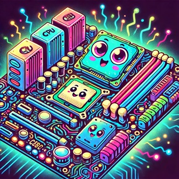
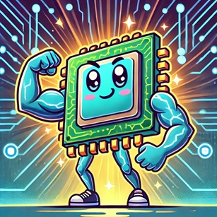
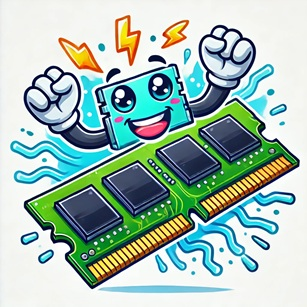
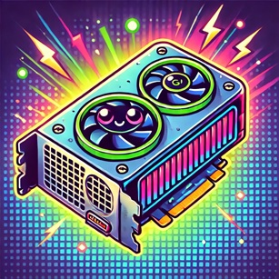
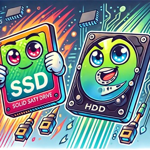
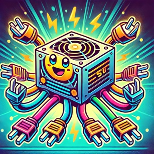
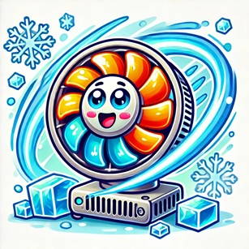

Datakomponenter
Her finner du en 100% realistisk presentasjon av de viktigste komponentene i en datamaskin! Hver komponent har sin egen viktige oppgave for å tilfredsstille gammerens behov.
Hovedkort (Motherboard) - Hjertet i systemet
Hovedkortet er den sentrale plattformen som kobler alle komponentene sammen. Det fungerer som en travel kontrollsenter hvor data flyter mellom CPU, RAM, GPU og lagringsenheter.
Prosessor (CPU) - Hjernen som tenker raskt
CPU-en er hjernen i datamaskinen. Den håndterer alle beregninger og logikk som trengs for å kjøre programmer. En raskere CPU betyr bedre ytelse for multitasking og tunge applikasjoner.
RAM - Den lynraske assistenten
RAM lagrer midlertidig data for rask tilgang. Jo mer RAM, jo flere oppgaver kan maskinen håndtere samtidig uten å bli treg. Perfekt for spill og krevende programmer!
Skjermkort (GPU) - Grafikkmesteren
GPU-en tar seg av all grafikkbehandling. Den er essensiell for gaming, videoredigering og 3D-modellering. Jo kraftigere GPU, jo bedre visuell ytelse får du.
SSD & HDD - Lagringsekspertene
SSD-er er lynraske og gir rask oppstart av programmer og operativsystemer. HDD-er er tregere, men gir stor lagringsplass for filer og backup.
Strømforsyning (PSU) - Energikilden
PSU-en sørger for at alle komponenter får riktig mengde strøm. Uten en god PSU fungerer ingenting!
Kjølevifte - Systemets Aircondition
For å holde temperaturen nede og systemet stabilt, jobber viftene døgnet rundt for å kjøle ned de mest varmeutsatte komponentene.